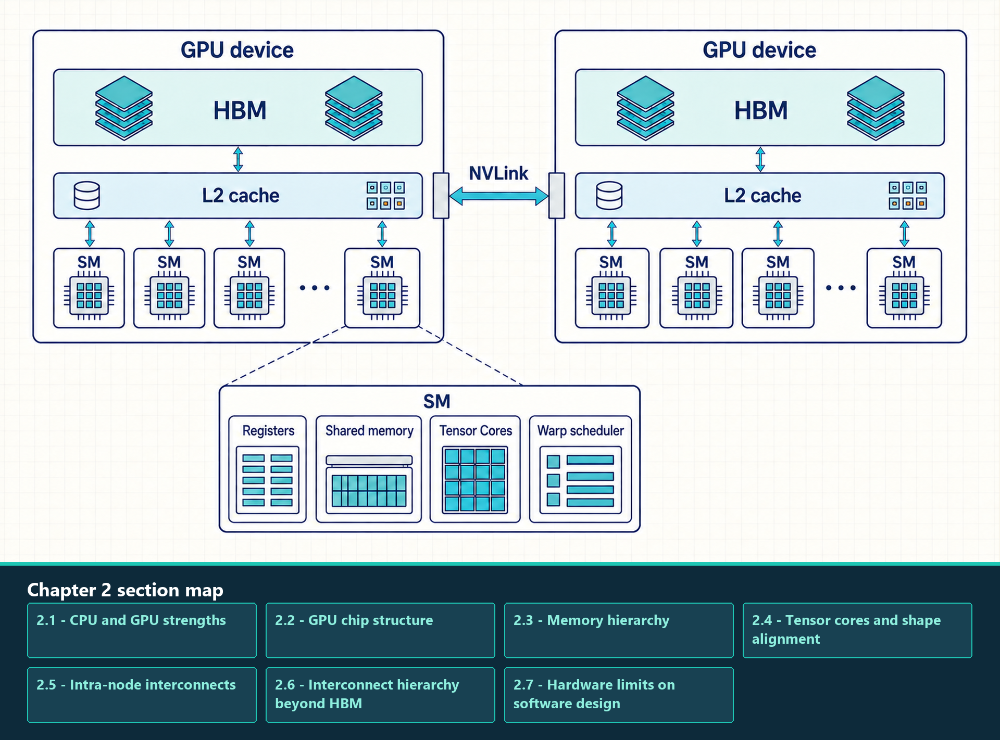

2 GPU Hardware and Memory
Teach GPU chip structure, SM execution, memory hierarchy, Tensor Cores, and interconnect fabrics.
A Graphics Processing Unit (GPU) is built for throughput. It spends less chip area on complex control logic than a Central Processing Unit (CPU) and more area on many arithmetic lanes, memory bandwidth, and hardware scheduling of many threads. Transformer workloads fit this design when operations are regular and sufficiently large.
The hardware hierarchy includes compute units, registers, shared memory, L2 cache, High Bandwidth Memory (HBM), host memory, and GPU interconnects. Each level differs in latency, bandwidth, capacity, and programmer control. Efficient software uses this hierarchy intentionally.
This hierarchy controls many later optimizations. Coalesced memory access improves HBM transactions. Tensor cores accelerate aligned matrix operations. Kernel fusion reduces trips through HBM. Tensor parallelism and all-reduce depend on the difference between NVLink inside a node and InfiniBand across nodes.
A training step keeps weights, activations, gradients, and optimizer state live. A decode step repeatedly reads weights and the KV cache for every generated token. The hardware hierarchy determines where these objects can reside and whether moving them costs more time than computing on them.
A GPU combines device-wide memory and cache with many Streaming Multiprocessors (SMs), each containing local execution and storage resources.

High Bandwidth Memory (HBM) and L2 cache serve the whole device. Registers, shared memory, warp scheduling, and Tensor Cores belong inside an SM. The second device makes the boundary explicit: NVLink carries peer traffic between GPUs rather than connecting an SM directly to another device’s cache.
2.1 CPU and GPU strengths
CPUs and GPUs divide a workload by control complexity and parallel regularity. CPUs provide flexible, latency-sensitive execution for operating-system work, scheduling, tokenization, and branch-heavy control flow. GPUs apply large numbers of arithmetic lanes to regular data-parallel operations such as matrix multiplication and elementwise tensor transforms.
CPU and GPU designs emphasize different kinds of work. As a broad design tendency, CPUs devote more resources to low-latency control, caches, and irregular execution, while GPUs devote more resources to throughput across many similar operations.

Treat the visual as a conceptual comparison rather than a literal chip floorplan. Modern CPUs and GPUs overlap in capability, but the throughput emphasis of GPUs explains why regular tensor shapes, batching, and memory coalescing matter.
A CPU runs fewer cores designed for branches, caches, and low-latency control work. A GPU runs many lightweight threads across similar data. Dense transformer projections therefore map naturally to GPU throughput, while request scheduling and irregular scalar logic remain CPU-side work. GPU performance depends on exposing enough parallel work, preserving locality, and avoiding divergence or tiny launches.
2.2 GPU chip structure
GPU chip structure is the organization of execution units, on-chip storage, caches, and off-chip memory that a kernel uses while it runs. Computation happens in execution units, while data is staged and reused through several storage levels with different scopes and costs.
GPU performance depends on registers, per-block shared memory, hardware-managed caches, High Bandwidth Memory (HBM), and external interconnects. Each level differs in scope, capacity, lifetime, and how software influences placement or reuse.
![GPU performance depends on registers, per-block shared memory, hardware-managed caches, High Bandwidth Memory (HBM), and external interconnects. Each level differs in scope, capacity, lifetime, and how software influences placement or reuse. The capacities printed in this source slide describe a particular accelerator rather than every GPU. Do not read the tiers as one compulsory path for every access: instructions, caches, shared-memory staging, and interconnect traffic depend on the operation and kernel.](../assets/fig-m4-c02-f03.jpg)
The capacities printed in this source slide describe a particular accelerator rather than every GPU. Do not read the tiers as one compulsory path for every access: instructions, caches, shared-memory staging, and interconnect traffic depend on the operation and kernel.
A Streaming Multiprocessor (SM) is the main execution unit. It schedules warps, uses registers for thread-local values, uses shared memory for block-local cooperation, and issues work to arithmetic units. The L2 cache and HBM are shared across the device.
Definition - SM, warp, and occupancy
Streaming Multiprocessor (SM): GPU execution unit that schedules warps and has a finite pool of registers, shared memory, scheduler slots, and arithmetic resources.
Warp: Hardware scheduling group of threads, usually 32 lanes on NVIDIA GPUs. Warp behavior shapes divergence and memory coalescing.
Occupancy: Amount of resident work available on an SM. High occupancy can hide latency, but it does not guarantee high throughput when memory access, instruction mix, or dependencies are poor.
The chip structure matters because every kernel consumes scarce per-SM resources: registers, shared memory, scheduler slots, and memory bandwidth. A kernel with too many registers per thread may reduce the number of active warps. A kernel with too much shared memory per block may reduce how many blocks can reside on an SM. A kernel with poor memory locality can keep arithmetic units idle even when many threads are present.
2.3 Memory hierarchy
GPU memory is not one uniform pool. Performance depends on which level serves the data, who can see it, and how directly the programmer can control it.
- Registers: Fastest storage, private to one thread, and used for scalar temporaries and small per-thread fragments. Register pressure can reduce occupancy because each Streaming Multiprocessor (SM) has a finite register file.
- Shared memory: On-chip memory shared by threads in one block, also called a Cooperative Thread Array (CTA). It is explicitly managed and useful for tiled reuse, but capacity is small and bank conflicts can waste bandwidth.
- L2 cache: Device-wide cache shared across SMs. It can capture cross-SM or cross-kernel locality, but programmers usually control it indirectly through access patterns and kernel choices rather than direct allocation.
- High Bandwidth Memory (HBM): Large off-chip GPU memory that stores model weights, activations, gradients, optimizer state, and KV cache. Its bandwidth is high in absolute terms, but it is still much slower than on-chip storage.
- Host memory and interconnect: CPU memory reached over PCIe or another system path. Transfers are much slower than on-device reuse, so repeated host/device movement is usually a design smell in hot paths.
Memory-tier caveat
The phrase ‘GPU memory’ hides large cost differences among registers, shared memory, L2, HBM, and host transfers. A kernel can fit in HBM and still be slow because it fails to reuse data closer to the SM.
| Level | Scope | Engineering role | Main risk |
|---|---|---|---|
| Registers | Thread | Fast scalar and vector temporaries | Too many registers reduce occupancy |
| Shared memory | Block / CTA | Tile reuse and cooperative staging | Bank conflicts or capacity pressure |
| L2 cache | Device | Cross-SM reuse and caching | Limited control and eviction |
| HBM | Device | Large tensor storage | Bandwidth and latency dominate if reuse is poor |
| Host / interconnect | System or cluster | Data loading and multi-GPU movement | Transfer latency and bandwidth |
GPU caches are hardware-managed storage between Streaming Multiprocessors and HBM. CUDA memory spaces such as registers, shared memory, global memory, and constant memory expose explicit placement choices; ordinary L1 and L2 cache residency mostly follows access pattern, instruction choice, and hardware replacement policy.
The per-SM L1 or unified data cache is closest to executing warps. It can reduce latency for repeated or nearby accesses inside work scheduled on the same SM. Cross-SM reuse belongs mainly to the device-wide L2 cache, which sits between kernel load/store traffic and HBM. L2 can capture reuse across SMs or across nearby kernel launches, while remaining much smaller than model weights, activations, or long KV-cache state.
Associativity is the cache rule that limits how many cache lines can occupy the same cache set. A cache can have enough total capacity and still miss if too many live lines map to the same set; that failure mode is a conflict miss. On current NVIDIA GPUs, exact set mapping, replacement details, and associativity are architecture-specific implementation details rather than a stable CUDA programming contract.
The practical optimization question is therefore not ‘which cache set owns this tensor?’ The useful questions are whether adjacent lanes access adjacent addresses, whether the working set fits within the level that should reuse it, whether a stride pattern repeatedly fights for the same limited cache resources, how many cache sectors are requested, how many requests miss to L2 or HBM, and whether reused data should be staged explicitly in shared memory or registers.
- L1 or unified data cache: Per-SM cache path for local load/store traffic. It helps locality inside work scheduled on the same SM, but it is not a general cross-SM state store.
- L2 cache: Device-wide cache shared by SMs. It is the main hardware cache level to discuss for cross-SM global-memory locality and L2 persistence controls.
- Cache sector: Profiler-visible access granularity. Nsight Compute reports sectors as 32-byte chunks, with four sectors in a 128-byte L1 or L2 cache line on documented NVIDIA profiling views.
- Associativity: Number of cache lines that can occupy one cache set. It matters when address layout or stride creates conflict misses even though total cache capacity seems sufficient.
- Cache control: A set of hints, resource preferences, and explicit staging choices. The programmer can influence replacement priority and allocation behavior, but cannot assign arbitrary tensors to cache sets or pin ordinary cache lines.
Where associativity shows up
Stride and layout conflicts: Power-of-two strides, column-wise traversal, or poorly padded leading dimensions can make warps revisit a small subset of cache sets. Symptoms are low hit rate or high miss traffic even when the nominal working set is not huge.
Warp memory shape: Coalesced contiguous lane accesses use cache sectors efficiently. Scattered lane accesses consume more sectors and make replacement pressure harder to interpret.
Streaming versus reused data: A one-pass stream should not evict data that the next tile or next kernel will reuse. Marking or structuring streaming accesses differently is useful when the trace proves reuse is being lost.
Concurrent kernels and streams: L2 is shared. Multiple kernels with persisting windows, peer traffic, or large streaming reads can evict each other’s useful lines when their combined footprint exceeds the set-aside or effective cache capacity.
Explicit staging: When reuse must be predictable inside a tile, shared memory and registers are stronger tools than hoping hardware cache replacement keeps the right lines.
Cache control boundaries
Direct control: Use registers and shared memory when the kernel needs predictable local reuse.
Runtime preferences: Use cudaFuncSetCacheConfig or cudaFuncAttributePreferredSharedMemoryCarveout to prefer an L1/shared-memory balance on supported devices. These are preferences or hints, not mandatory placement.
L2 persistence: Use a CUDA stream or graph access-policy window when a global-memory range is repeatedly reused and small enough for preferential L2 retention. The window uses properties such as persisting, streaming, and normal access plus a hitRatio hint.
Low-level cache operators: Generated PTX or hand-written low-level kernels can use cache operators and eviction hints, such as cache-all, L2-only, streaming, evict-first, or evict-last forms. These express intent; they do not change program correctness or guarantee a replacement outcome.
Unsupported control model: Exact associativity, undocumented replacement policy, and manual cache-set placement are architecture details, not normal CUDA programming controls.
Proof: Use profiler counters for sectors per request, L1/TEX hit behavior, L2 hit rate, sector misses to device, system, or peer memory, and HBM traffic before assuming a cache hint helped.
Cache controls help only when the access pattern creates reuse and profiler counters show that the hardware retains it; they cannot repair scattered accesses or force exact residency. Once operands reach an SM, the next question is whether their shapes and data types let Tensor Cores perform the arithmetic efficiently.
2.4 Tensor cores and shape alignment
Tensor Cores are specialized Matrix Multiply-Accumulate (MMA) units inside Streaming Multiprocessor partitions. They consume supported matrix tiles at very high throughput. One H100 SXM configuration has 132 SMs and four fourth-generation Tensor Cores per SM, but exact counts and available throughput depend on the GPU variant and enabled chip resources.
Tensor Cores operate on tiles rather than arbitrary scalar operations. A 16 x 16 x 16 MMA tile is a useful first approximation, though exact supported shapes depend on architecture, dtype, and kernel path. This is why hidden sizes, head dimensions, batch shapes, and padding can affect performance. Padding may increase nominal arithmetic while improving utilization by moving the operation onto a fast tensor-core path.
In modern transformer GEMM, ‘compute-bound’ often means ‘tensor-core-bound’: the useful question is whether the operation reaches the specialized matrix units efficiently. Verify this in traces rather than assuming it. Nsight Systems kernel names, Nsight Compute instruction metrics, and achieved tensor-core utilization can show whether the intended path was actually used.
Shape alignment depends on the library path and GPU architecture as well as the mathematical matrix dimensions. NVIDIA’s matrix-multiplication guidance reports that modern cuBLAS and cuDNN can often use Tensor Cores even when dimensions are imperfectly aligned, while efficiency improves when the fastest-varying matrix dimensions align to hardware-friendly byte multiples. For FP16, a common practical rule is to prefer multiples of 8 elements, with larger multiples often helping on A100-class paths. Exact requirements vary by CUDA library version, dtype, layout, and GPU generation.
Tensor Core caveat
A poorly aligned matrix shape can trigger internal padding, a less efficient tile path, a different kernel, or Tensor Core execution with lower utilization. The performance diagnosis should therefore check the actual kernel path, achieved utilization, and tensor dimensions together.
The tensor-core figure compares two tile-utilization cases. It is a schematic utilization comparison, not a timing benchmark.
Tensor Cores execute supported matrix multiply-accumulate instructions on small hardware fragments. Kernels combine those fragments into warp-, block-, and software-level tiles that can be much larger than one instruction.

The 64 by 64 regions in the visual are software or kernel tiles, not the dimensions of one Tensor Core instruction. Alignment and remainder handling can affect utilization, while exact instruction shapes and Tensor Core counts depend on GPU architecture, dtype, and SKU.
Chart note
Measured or compared: Tile utilization for a matrix problem that aligns cleanly with tensor-core tiles versus one that wastes lanes or tile capacity.
Axes, units, and series: The visual uses tile grids rather than numeric axes. Labels indicate tile dimensions and the amount of useful versus unused tile work in the best and not-so-great cases.
Read for: Read for the shape-alignment boundary: padding or choosing dimensions that match supported MMA tiles can increase useful tensor-core utilization even if nominal arithmetic grows.
Source status: Exact source schematic screenshot; utilization labels are preserved from the slide and no timing values are extracted.
Tensor Core speed requires a supported numerical format, aligned dimensions, and an execution path that actually selects the accelerated kernel. When an operation spans several GPUs, the next question is whether the local interconnect can move partial results quickly enough to preserve that compute gain.
2.5 Intra-node interconnects
The earlier sections described one GPU’s execution and memory hierarchy. Scaling starts when tensors must cross a physical boundary: between GPUs in one server or between servers in a cluster. A GPU is one execution device. A board or accelerator card packages one or more GPUs and their local HBM. A node, also called a server, contains CPUs, host memory, PCIe root complexes, network interface cards, and one or more GPU boards. Intra-node traffic stays inside one server; inter-node traffic crosses the cluster network between servers.
Intra-node topology starts before GPU-to-GPU links. Multi-socket servers often have Non-Uniform Memory Access (NUMA): CPU cores, host memory channels, PCIe root complexes, GPUs, and Network Interface Cards (NICs) are closer to some sockets than others. A process placed on the wrong CPU socket can feed a nearby-looking GPU through a slower path.
Definition - NUMA and placement
NUMA: Non-Uniform Memory Access. Memory and I/O access time depends on which CPU socket is attached to the memory controller or PCIe path.
Closest CPU/socket: The CPU socket with the shortest host path to a given GPU or NIC. Data loading, tokenization, and host-to-device copies can be slower when the process is scheduled far from that path.
Process/GPU pinning: Bind ranks, CPU worker threads, and visible GPUs so the host work for a GPU runs near that GPU’s PCIe and memory locality when the system topology makes this relevant.
Why it matters: Bad locality can reduce throughput or add latency before InfiniBand, NCCL, or distributed algorithms enter the picture.
PCIe connects GPUs to the host and sometimes to each other, but it is much slower than on-package or board-level GPU interconnects. NVLink provides higher bandwidth GPU-to-GPU communication inside a node. NVSwitch extends this idea to many GPUs. These fabrics matter for tensor parallelism and frequent collectives.
| Path | Typical scope | Typical bandwidth | How to use the number |
|---|---|---|---|
| HBM | On one GPU | Several TB/s on data-center GPUs | Use as the roofline memory ceiling for local kernel reads and writes. |
| NVLink / NVSwitch | GPU-to-GPU inside supported systems | Hundreds of GB/s to around TB/s-class aggregate paths depending on generation and topology | Useful for frequent tensor-parallel or collective traffic inside the fast local domain. |
| PCIe | CPU/GPU or device path through PCIe | Tens of GB/s per direction for current high-end links | Good for setup and staged copies, but too slow for repeated hot-loop movement. |
| InfiniBand / RoCE | Across nodes | Tens to hundreds of GB/s effective per node only on engineered fabrics | Use for scale-out communication after confirming the runtime selected the intended NIC and transport. |
2.6 Interconnect hierarchy beyond HBM
An interconnect is the path used to move data between processors, accelerators, host memory, network cards, or nodes. After data leaves HBM or one GPU, the cost model changes: bandwidth usually drops, latency rises, and synchronization becomes more visible.
Definition - Interconnect terms
PCIe: General host/device expansion bus for CPUs, GPUs, NICs, and other devices.
NVLink: High-bandwidth GPU-to-GPU link available only on supported systems and topologies.
NVSwitch: Switch fabric that connects multiple NVLink-capable GPUs inside a server or platform.
NIC: Network Interface Card, the device that connects a node to the cluster network.
InfiniBand: High-performance cluster fabric commonly used for multi-node GPU training and serving.
RoCE: RDMA over Converged Ethernet; performance depends strongly on Ethernet fabric configuration.
Ethernet: General-purpose network fabric. It is ubiquitous, but unoptimized paths are often weak for frequent GPU collectives.
After HBM, the next distance is usually another GPU or another node. Moving tensors across PCIe, NVLink, NVSwitch, InfiniBand, RoCE, or Ethernet is far more expensive than reading registers or shared memory. Distributed training and distributed inference therefore add explicit communication costs and synchronization points to the single-GPU execution model.
A useful mental model is distance. Intra-SM movement is cheapest, HBM movement is expensive but local, GPU-to-GPU movement inside a node is more expensive, and node-to-node movement is usually more expensive again. NCCL and torch.distributed appear later as software layers that use these physical paths.
A memory-transfer path is the hardware route used to move bytes from one memory domain to another. For GPU workloads, the important domains are CPU system memory, pinned host memory, one GPU’s HBM, another GPU’s HBM, and memory reachable through a Network Interface Card (NIC). These domains differ in latency, bandwidth, address-translation rules, and synchronization behavior.
The performance mistake is to treat every transfer as the same kind of HBM traffic. A kernel reading its own tensor, a host batch copied into GPU memory, a peer GPU copy, and a cross-node collective all move bytes, but they use different software owners and hardware paths.
Copy engines and caches solve different movement problems. A copy engine is used for explicit transfer work, such as host-device copies or some device-device copies. The cache hierarchy serves ordinary kernel load/store instructions as warps read and write tensors. A slow trace can involve both: a batch might first move through a DMA copy path into HBM, then a kernel might waste HBM bandwidth because its warp loads miss cache or access scattered sectors.
- SM load/store path: Used by kernels reading and writing tensors already in the same GPU’s HBM. Requests flow through the GPU execution pipeline, L2 cache, memory controllers, and HBM stacks.
- Copy engine and DMA path: Used by many explicit host-device or device-device copy operations. The host submits a command, while Direct Memory Access (DMA)-capable hardware moves bytes without the CPU copying each byte in a software loop.
- Peer-to-peer path: Used when one GPU can directly copy to or access another GPU’s memory through NVLink, NVSwitch, or PCIe peer paths supported by the platform.
- NIC and RDMA path: Used when bytes cross nodes through a network card. On supported systems, GPUDirect RDMA lets the NIC access GPU memory directly; otherwise the payload may stage through host memory.
- Host bounce path: A fallback where GPU data is copied through CPU memory before reaching its destination. It is often correct but can add PCIe traffic, CPU-memory pressure, and latency.
The diagram separates the movement paths. The following principles and table answer a practical design question: which software layer initiates each path, which physical route carries the bytes, and which condition should be checked before optimizing it.
Transfer design principles
Pinned-memory staging: Use page-locked host buffers when repeated host-to-device copies need efficient DMA and possible overlap.
Compute near data: Run the operation where the tensor already lives instead of moving the tensor to a more convenient but distant processor.
Direct path validation: Confirm that a peer, NVLink/NVSwitch, or RDMA path is actually available before assuming the fast route exists.
Distance by frequency: The more often data moves, the closer the communicating devices must be. Per-token communication should stay closer than per-step or background movement.
| Path | Typical owner | Hardware route | What to verify |
|---|---|---|---|
| Kernel HBM access | Kernel code, vendor library, Triton, TorchInductor | SM load/store through L2 and HBM controllers | Uncoalesced access or poor reuse wastes HBM bandwidth |
| Host to GPU | PyTorch tensor placement, CUDA runtime | Pinned/pageable host memory through PCIe or similar host path | Pageable staging, NUMA mismatch, hidden synchronization |
| GPU to GPU | CUDA peer copy, NCCL, distributed framework | NVLink, NVSwitch, or PCIe peer path | Peer access unavailable, topology asymmetry, host bounce |
| GPU to network | NCCL, UCX/MPI, NIC driver | NIC/RDMA path through InfiniBand, RoCE, or Ethernet | Wrong NIC, no GPUDirect RDMA, congestion, rank skew |
Name the data path before choosing a fix. A profiler copy span might be a host-device DMA transfer, a peer GPU copy, a network transfer, unified-memory migration, or explicit kernel load/store traffic. Each path requires a different change.
2.7 Hardware limits on software design
Software design is constrained by the cheapest place where data can be reused. If values are reused within a thread, registers are ideal. If values are reused by a block, shared memory can help. If values are reused across kernels or requests, L2, HBM layout, and serving-engine cache policies matter. Distributed systems add another hierarchy: GPU-to-GPU, node-to-node, and storage-to-host movement.
VRAM means the GPU device-memory capacity available for tensors, model weights, activations, workspaces, and caches. On the datacenter GPUs discussed in this module, that device memory is High Bandwidth Memory (HBM).
The mismatch between GPU VRAM capacity growth and LLM parameter size growth explains why model sharding, quantization, and offloading are central concerns. GPU compute and bandwidth have scaled faster than per-device VRAM capacity, so memory capacity remains a hard physical wall for large models.
This capacity comparison estimates what raw weights alone consume on example GPUs. Start with parameter count times bytes per stored weight, then reserve capacity for scales, temporary workspaces, allocator headroom, and the KV cache required by the target batch and context length.
| Example GPU | VRAM capacity | Peak bandwidth | Example model scale | What else uses memory |
|---|---|---|---|---|
| Pascal (GP100 / P100) | 16 GB (HBM2) | 720 GB/s | BERT-Large (~340M parameters) | FP16 weights are about 0.68 GB; BERT-Large is a small model by current LLM-serving scale |
| Volta (GV100 / V100) | 32 GB (HBM2) | 900 GB/s | GPT-2 (~1.5B parameters) | Fits in a single GPU; requires ~3 GB in FP16, leaving room for activations |
| Ampere (GA100 / A100) | 80 GB (HBM2e) | 2.0 TB/s | GPT-3 (~175B parameters) | Cannot fit in one GPU (~350 GB weights); requires multi-node sharding (tensor/pipeline parallel) |
| Hopper (GH100 / H100) | 80 GB (HBM3) | 3.35 TB/s | Llama 3-70B (~70B parameters) | FP16 weights need two or more GPUs. Raw FP8 weights can fit one 80 GB GPU only with an explicit KV-cache and workspace budget; INT4 leaves more headroom |
| Blackwell (B200) | 192 GB (HBM3e) | 8.0 TB/s | Llama 3-405B (~405B parameters) | Requires multi-GPU sharding. An 8-GPU node is a common deployment unit; final GPU count depends on weight dtype plus KV-cache and workspace budget |
CUDA makes this hierarchy programmable. The next chapter names the host, device, kernel, grid, block, thread, warp, stream, and memory-allocation objects that software uses to express work on this hardware.